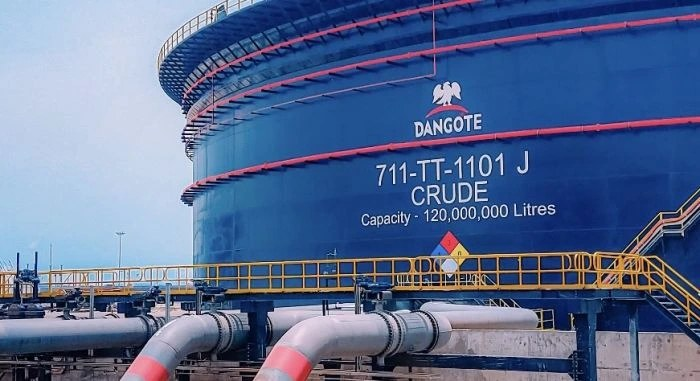

Dangote supplies 31.89 million litres of petrol daily in October as imports rise 47%

Dangote Petroleum Refinery supplied Nigeria with an average of 31.89 million litres of petrol a day in October 2026, a 12% increase from September. At the same time, petrol imports rose 47% to 15 million litres daily, according to the Nigerian Midstream and Downstream Petroleum Regulatory Authority’s October sector factsheet. Total petrol receipts climbed 21%, from 38.7 million litres per day in September to 46.9 million in October.
The refinery operated at 103.73% of its installed capacity of 650,000 barrels a day and produced an average of 48.51 million litres of petrol daily. Its operating rate was down from 105.98% in September. The regulator noted that October export shares were calculated as a proportion of production, rather than evacuation, the basis used in September’s factsheet.
Petrol consumption increased 5% month on month to 46.5 million litres a day, while diesel consumption rose 7% to 15.5 million litres. The factsheet indicated that stock sufficiency—the number of days inventories can cover consumption—declined for both fuels despite higher receipts. Crude oil deliveries to domestic refineries averaged 736,000 barrels a day, up 19% from September’s 617,000.
Modular refineries supplied an average of 680,000 litres of diesel daily, against 620,000 in September, equal to about 4.9% of the regulator’s 14-million-litre daily demand benchmark. WalterSmith, Edo Refinery, Aradel and OPAC recorded varying activity; Duport Refinery remained shut. Dangote also exported a combined 55.28 million litres of petrol, diesel and aviation fuel daily in October, compared with domestic deliveries of 43.96 million litres across those products. Botswana was reported to be seeking a fuel supply agreement with the refinery as it looks to diversify its petroleum sources.
Source: Nairametrics